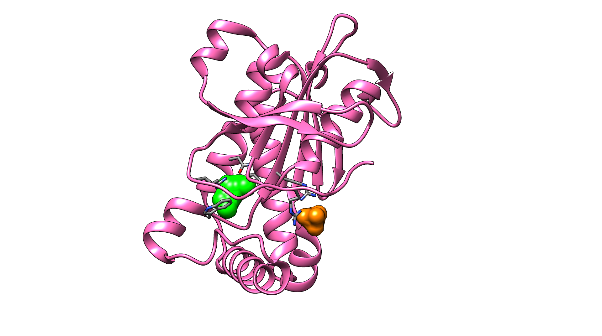

I am a second year PhD student in the Structural Bioinformatics Group at Imperial College London.
My interests include protein structures, computational drug discovery, software development and open science. Currently my research involves developing computational methods to predict modulating sites on proteins.

Education
2014-2016 | Imperial College London | PhD candidate in Structural Bioinformatics | Funded by BBSRC
2013-2014 | Imperial College London | MSc Bioinformatics and Theoretical Systems Biology | Distinction and highest mark in class
2009-2013 | Emmanuel College, University of Cambridge | MSci and BA Hons Natural Sciences (Chemistry) | 2.1 classification in all years
Publications
Greener, JG and Sternberg, MJE. AlloPred: prediction of allosteric pockets on proteins using normal mode perturbation analysis, BMC Bioinformatics, 2015, 16(335) | Link | Website
Experience and skills
- Developed a novel computational procedure, AlloPred, to predict allosteric sites on proteins. Normal mode analysis was used to model the effect of perturbations at potential allosteric sites and these features were combined in a machine learning approach to predict allosteric pockets. Performance is similar and complementary to existing methods and the website has had submissions from around the world.
- Contributed to the open source BioJulia project - wrote the Bio.Structure module that deals with parsing and manipulating macromolecular structures.
- Eight-week placement at the University of São Paulo (summer 2013) on virtual screening to re-purpose existing drugs.
- Eight-week placement at Imperial College London (summer 2011) on computational modelling of ionic liquids.
- Lead web developer in the AllwriteUCAS project that gives applicants to university the skills to write an effective personal statement (website under development).
- Proficient in Python, Julia and UNIX. Some experience with C++, C#, Java, JavaScript, SQL and HTML/CSS.